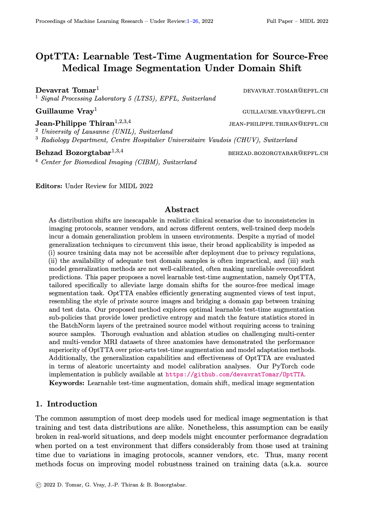

Abstract
As distribution shifts are inescapable in realistic clinical scenarios due to inconsistencies in
imaging protocols, scanner vendors, and across different centers, well-trained deep models
incur a domain generalization problem in unseen environments. Despite a myriad of model
generalization techniques to circumvent this issue, their broad applicability is impeded as
(i) source training data may not be accessible after deployment due to privacy regulations,
(ii) the availability of adequate test domain samples is often impractical, and (iii) such
model generalization methods are not well-calibrated, often making unreliable overconfident
predictions. This paper proposes a novel learnable test-time augmentation, namely OptTTA,
tailored specifically to alleviate large domain shifts for the source-free medical image
segmentation task. OptTTA enables efficiently generating augmented views of test input,
resembling the style of private source images and bridging a domain gap between training
and test data. Our proposed method explores optimal learnable test-time augmentation
sub-policies that provide lower predictive entropy and match the feature statistics stored in
the BatchNorm layers of the pretrained source model without requiring access to training
source samples. Thorough evaluation and ablation studies on challenging multi-center
and multi-vendor MRI datasets of three anatomies have demonstrated the performance
superiority of OptTTA over prior-arts test-time augmentation and model adaptation methods.
Additionally, the generalization capabilities and effectiveness of OptTTA are evaluated
in terms of aleatoric uncertainty and model calibration analyses.
OptTTA Results
Below, we show related plots for the evolution of the top sub-policy on sample test images per dataset, reliability diagrams for pixel-wise predictions, and a comparison of the segmentation confidence and uncertainty of OptTTA against other test-time augmentation baselines on the Prostate dataset, respectively.
Try our code
We released PyTorch code and pre-trained models of the OptTTA for your use.
Paper
|  |
D. Tomar, G. Vray, J.P. Thiran, B. Bozorgtabar
OptTTA: Learnable Test-Time Augmentation for Source-Free
Medical Image Segmentation Under Domain Shift.
In MIDL, 2022 (Oral).
OpenReview
|
Acknowledgements
We thank Taesung Park for his project page template.
|